Agemo product, 25 questions
A tool that can make anything gives a visitor nothing to ask for.
So the front page stops describing the machine.
It shows a handful of tools already made, each one ready to run or to change.
We find the few things a product does that make someone say: I need that.
“What are you really good at?” a user, in the research

An empty box asks for the hardest thing first.
Nobody was ready to describe a tool from nothing.
So the first act became changing a tool somebody else had made.
We find the smallest first move a newcomer will really make, and start the product there.
“We believe that new users will not be prepared to create from a blank prompt at first” the second bet

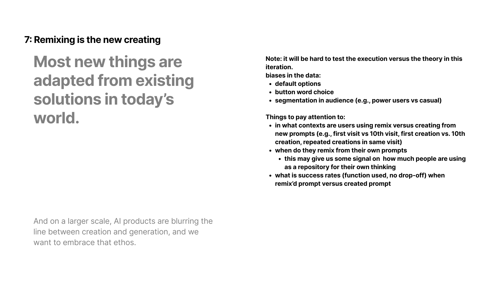
The old product only worked with someone sitting beside you.
So that someone went into the product.
You ask while you build, and the lesson is the work.
We make the explanation part of the product, so nobody has to read before they start.
“If you weren’t here to walk me through it, I would have dropped off already.” a user, in the research

Nobody was waiting for this. They had a search bar and a dozen free tools.
So the product is not sold as something new. It is the same job, done in one place.
And we wrote down how we would know: do people who come for one tool stay for a second?
We design against what people already do, not against an empty space.
“a new way of completing an existing behavior to users, not a new behavior” the first bet

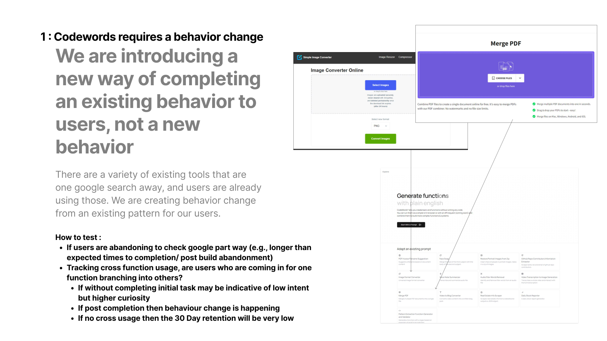
The team wanted power users. Most visitors were not.
We did not thin the product down.
We gave it stairs: run a tool, change one, write one, chain them.
We keep the depth, and build the way up to it.
“Favor enabling power users over simplifying for casual users.” the fourth bet

A failed run was a red box and nowhere to go.
Each one spent a little of the trust the product needed.
So every failure was given words, and a next move.
We design the bad moments first, because that is where people decide whether to come back.
“feels like a dead end” the research, on a failed run

You don't. So we wrote down what we believed.
Eight bets about how people would behave, each with what would prove it wrong.
Every screen is one of those bets, built so the team can watch it win or lose.
We hand over the reasoning with the screens, so the testing goes on after we leave.
“it is valuable to see if this hypothesis holds true” the third bet

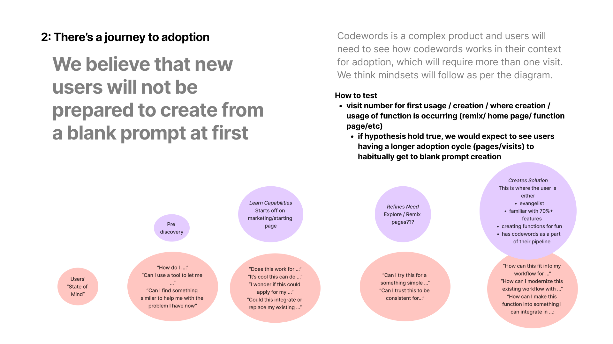
People wanted it done for them. They were also afraid to touch what it wrote.
So the machine proposes, and the person decides.
One step, Review: take it, change it, or ask why.
We decide, move by move, who is holding the pen.
“I did not modify the new prompt because I was scared to break anything.” a user, in the research

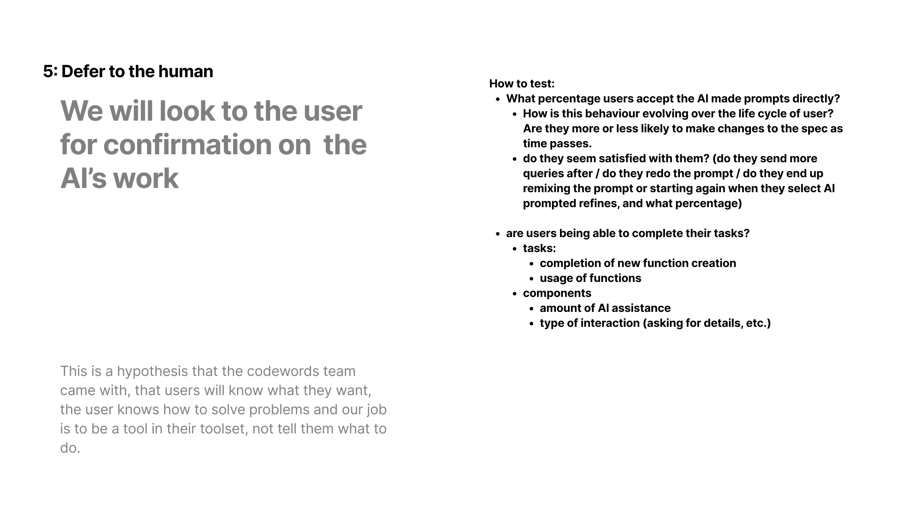
Building a tool takes minutes, and the screen said almost nothing.
People wondered whether to leave.
So the build shows who is on it: one plans, one writes, one checks.
We design the minutes when nothing is asked of you.
“Things are happening. But how long should I wait for?” the team, walking the old flow

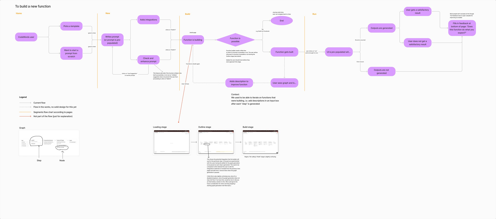
A new kind of product has no category to borrow.
Every candidate drew the box a little wrong: too small, too vague, too much about AI.
Dozens later, one line could hold it.
We write the headline as a design problem, until the product fits inside it.
“these arent AI tools though. They are tools made with AI.” a note on the second round

The product spoke in functions and integrations.
The people it was for did not.
So a function became a tool, and the first box asks you to describe one.
We take the team's vocabulary out and put the user's in.
“Create a function that... I don’t know what a function is.” the team, walking the old flow

It does not happen in one visit.
First they ask what this does. Then when it could help them. Then which of their problems it can keep solving.
Each part of the product was built for one of those questions.
We map the change of mind first, then give each stage its place in the product.
“What of my problems can be consistently solved by this system” the journey model

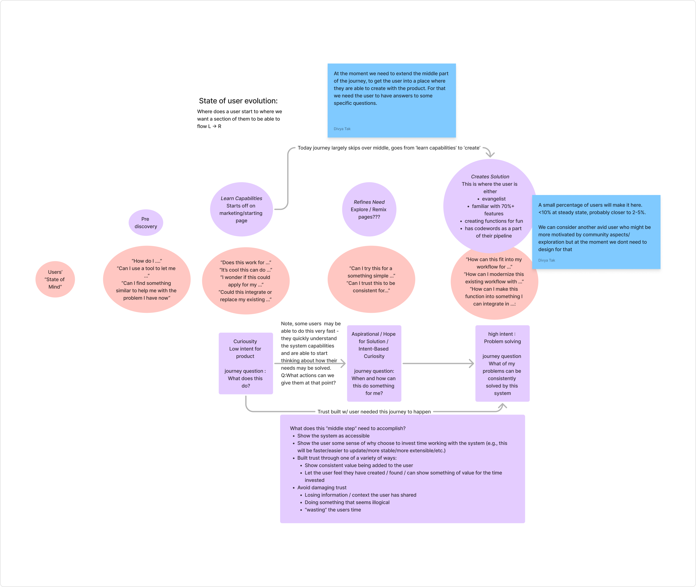
One came to build. One came to look.
Every page could only lead with one of them.
We chose the builder, and gave the looker a way to become one.
We choose who comes first, and then hold to it on every page.
“Favor people who have a goal to complete, and secondarily support people who are curious or idly browsing” the third bet

We were asked to clean up the onboarding.
The trouble sat earlier: nothing stood between hearing about the product and an empty box.
So we did not add a tour. We built what was missing in between.
We answer the brief by finding the problem underneath it.
“Today journey largely skips over middle, goes from ‘learn capabilities’ to ‘create’” the journey model

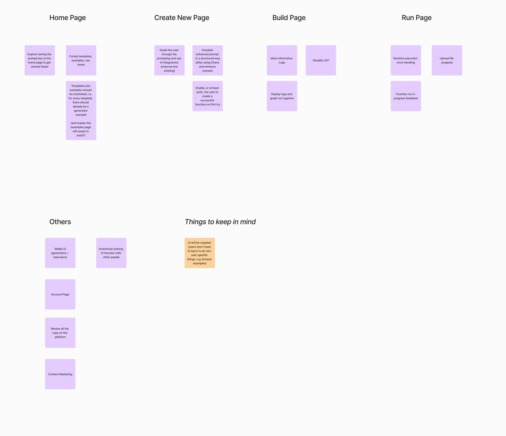
The old product took one description and built it.
But people find out what they want by seeing a first try.
So the description became a draft: come back to it, change it, build it again.
We design for the second and third attempt, not only the first.
“Ideas rarely show up fully formulated.” the sixth bet

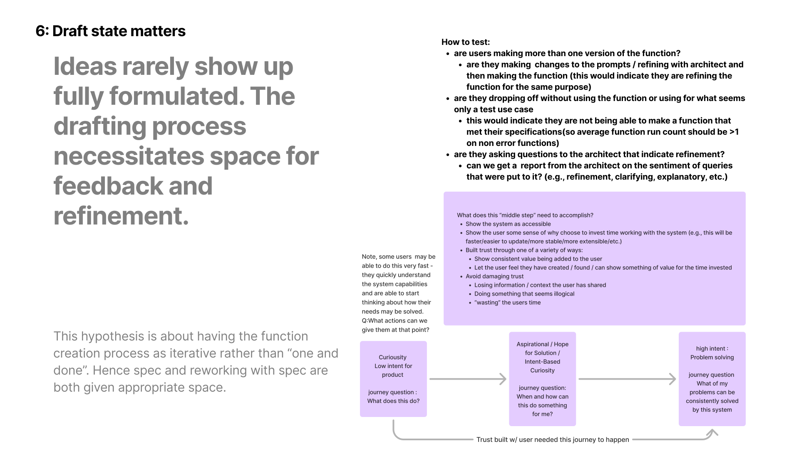
A generated tool has no reviews, no maker, no history.
So its page carries what it does have.
How fast it was built, how often it has run, what it takes and gives, and the tools most like it.
We find what counts as evidence for a new kind of thing.
“generated in x seconds, the equivalent of y dev hours” a note on the third round

Search would have been easy to add. So would free runs, and a place for the merely curious.
Each was weighed against the one act that mattered: making a tool.
Each one lost.
We keep the product about one act, and say no to the rest out loud.
“there is no point in replacing create with a far lower quality action” a note on the fourth round

A tool made by a machine may have no description, no author, nothing like it.
A person may have no credits left.
So each page was drawn for that day too, not only the day everything is there.
We draw the empty and broken states with the same care as the full ones.
“If no description, how do we fail gracefully?” a note beside the final screens

Before what it does, people ask whether they belong here.
So every example at the front was chosen for a feeling someone already has.
A chore they hate. A paid app they resent. A thing they have been meaning to sort out.
We pick the examples for the people, not for the technology.
“Who are the right people for this product (do I belong here?)” the journey model

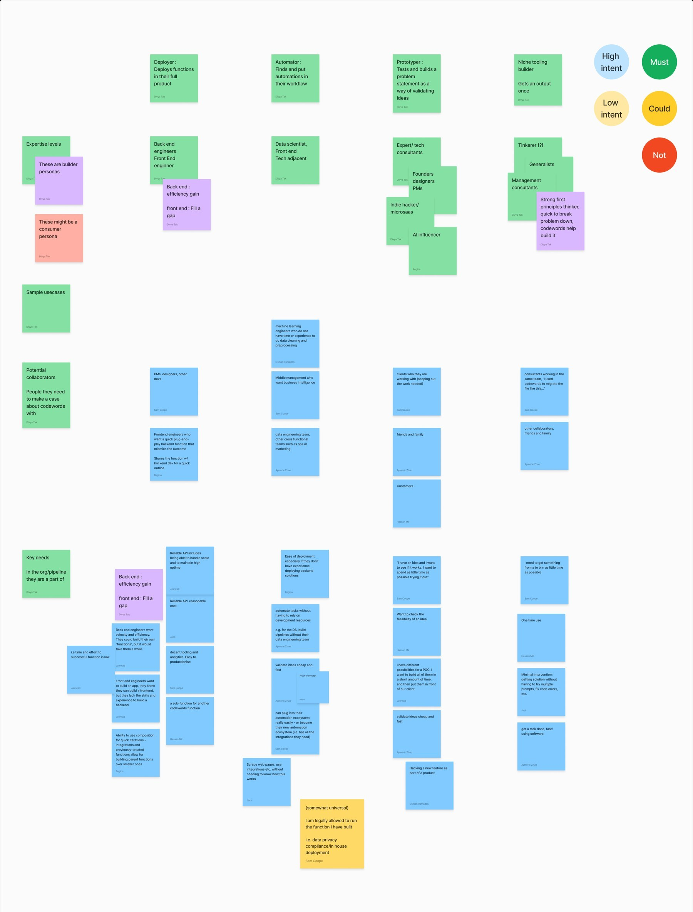
Users were lost almost everywhere, and delighted in one place.
A small helper that read your description and made it better.
We built the new product around that conversation.
We look for the one moment people already love, and give it the room.
“The prompt helper is genius.” a user, in the research

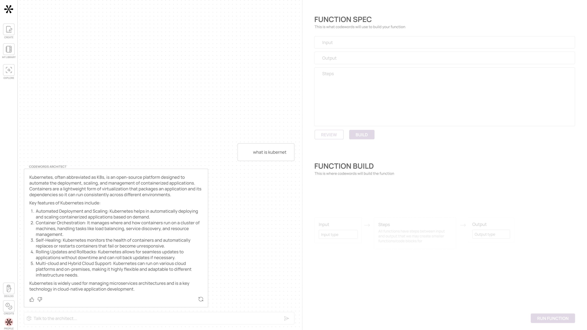
Nobody takes up a tool like this in one sitting.
So the first visit is not asked to do everything.
It has to leave you with one thing that worked, and a reason to bring your own problem next time.
We design the first ten minutes to earn the next visit, not to close the sale.
“Let the user feel they have created / found / can show something of value for the time invested” the journey model

Every tool, however odd, has the same three parts.
What goes in, what comes out, the steps between.
The first box asks for them, the spec lists them, the run shows them.
We find the one structure a product can repeat everywhere, so it only has to be learned once.
“Describe the inputs, outputs and steps.” a note on the last round

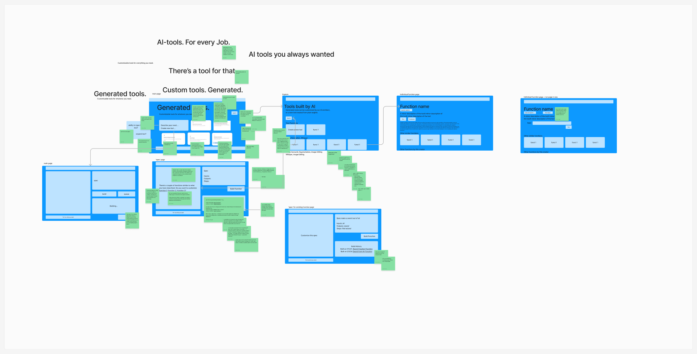
Taken at its word, the product promised the moon.
People believed it, tried something it could not do, and left.
So the promise got narrower and truer: these kinds of things, faster.
We set the promise where the product can keep it.
“I’m taking it at face value so my expectations are super high.” a user, in the research

The machine cannot build everything, and used to say so only after trying.
By then the person had spent credits and patience.
So the answer moved forward, into the conversation, before anything is built.
We move the bad news to the cheapest moment.
“It has told me before I’ve spent any credits attempting to build it which is nice” the team, walking the old flow

The people who built it could no longer not know how it works.
So we walked the old flow with them, and each wrote what a newcomer is thinking at every step.
The gaps went up on the wall in their own words.
We get the team to find the problem themselves, so the fix is theirs too.
“I’m not sure if there is anything I need during the build phase. Do I just sit and wait?” the team, walking the old flow